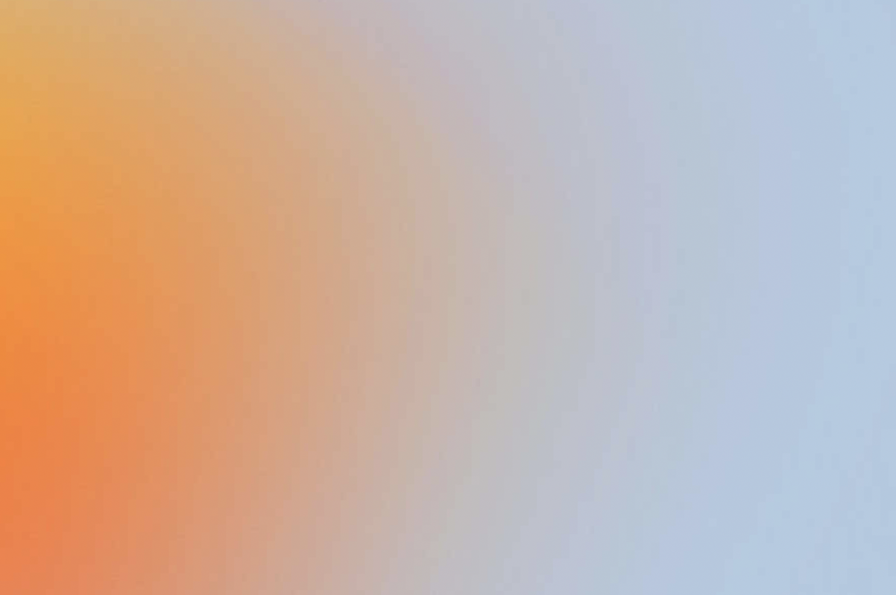
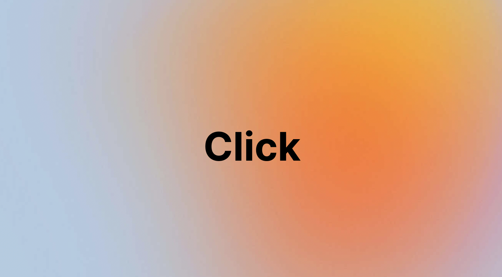
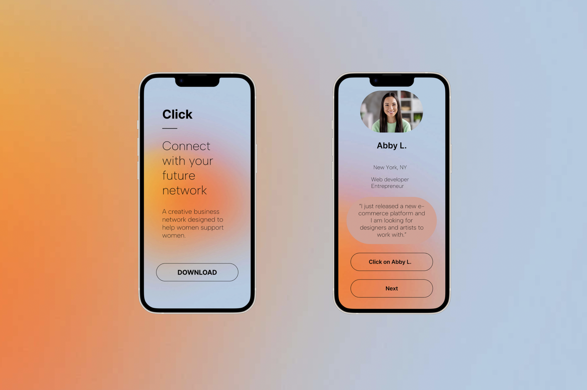
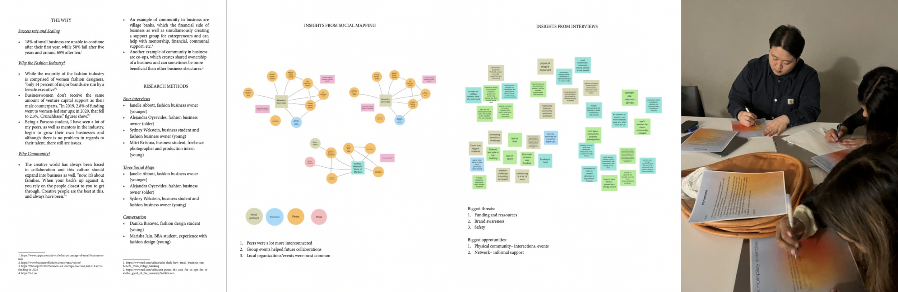

I created the idea for “Click” as a way to connect women who own small fashion businesses and help them support each other. From my own conversations with women in the industry, I knew that the challenges—lack of business knowledge, limited funding, scaling issues, and finding a market—were often compounded by gender inequality in leadership and investment. My idea was to explore community as the solution. I interviewed women business owners, mapped their networks, and tested a prototype that brought small groups together to share resources and mentorship. The testing phase proved that fostering these connections worked—participants began collaborating and attending events together. This reinforced my belief that community-building can be a powerful tool for sustainability in creative businesses.
Choosing an app format was intentional—through my research and interviews, I realized that while community events and local networks were valuable, they often relied on geography, word of mouth, or chance encounters. Many women I spoke to were juggling intense workloads and couldn’t always attend in-person meetups, so a mobile platform offered flexibility, accessibility, and a way to maintain ongoing connections regardless of location.



